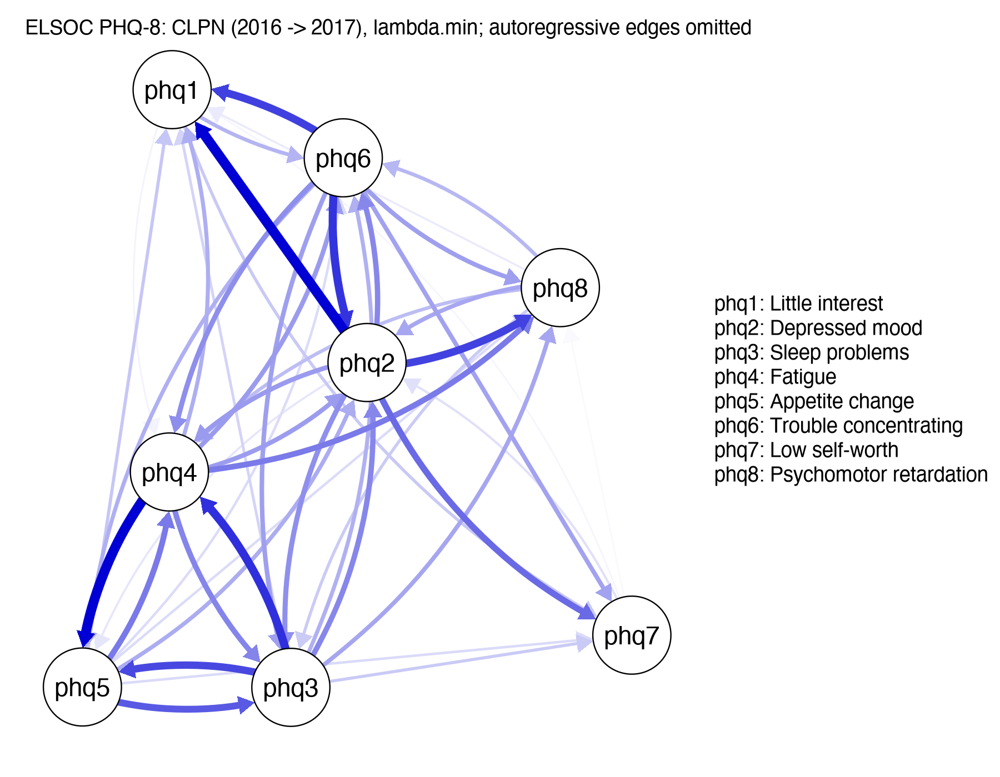

Real-Data Case: An ELSOC Depressive Symptom Network
The course's main-line “LASSO-only” CLPN on public longitudinal data on depressive symptoms from ELSOC. The analysis file comes with the course; run R/case_elsoc.R to reproduce the results on this page.
What this page is
The network analyses in the lessons all use simulated data, because only simulated data have a known "true structure" to compare against. This page runs the same workflow on a public, real longitudinal panel: the 8 depressive symptom items of the Chilean Longitudinal Social Study (ELSOC), predicting 2017 from 2016. The method is the course's main-line "LASSO-only" CLPN (7.1–7.4), plus an edge-weight bootstrap with 200 resamples (8.2).
Read it after Lessons 7.4 and 8.2. It is not a new method but a comparison: real data have no "answer key", so all you can say is what the data support and what they don't.
Every count, coefficient and interval below is read from R/output/data_elsoc_log.txt and case_elsoc_*.csv when the site is built; the scripts are R/data_elsoc.R and R/case_elsoc.R (seed 2026). Don't copy these numbers into your own paper: with your sample and your seed, the numbers will be different.
The data
Source: Reproducible Research, Centre for Social Conflict and Cohesion Studies COES (2022). Estudio Longitudinal Social de Chile 2016-2021. Harvard Dataverse, V1. https://doi.org/10.7910/DVN/LQMURF, UNF:6:z/vWFguq9fg03YaOLWFddA== [fileUNF]. The Dataverse page marks this version as CC0 1.0, so it may be redistributed.
The course comes with two files, both in the repository and in clpn-course.zip: the original file data/elsoc/ELSOC_Wide_2016_2021_v1.00_R.RData (byte-identical to V1 on Dataverse, MD5 a5a45571d39cf9db12e1949fdcb6fff2), and the analysis file data/elsoc_phq8_wide.csv that R/data_elsoc.R writes from it (original sample, PHQ-8 at three waves plus gender and age, 27 columns). For the case you only need:
source("R/case_elsoc.R") # CLPN and 200 bootstrap resamples, about 1–2 minutesTo check the preprocessing, run source("R/data_elsoc.R"): it reads the bundled original file (and downloads it from Dataverse only if it is missing) and writes the analysis file again; the result should be the same as the file that comes with the course. No internet connection is needed.
What the preprocessing does
- Only the original sample recruited in 2016 is used, not the refresher sample that joined in from 2018 onward (it has no data for the first two waves).
- Negative values are missing-data codes (−999 / −888 / −777 / −666) and are all set to NA. The original IDs are not kept.
- Only the first 8 PHQ items are kept, at three waves (2016, 2017, 2018).
Item 9 asks about thoughts of death or of hurting yourself. It is a high-risk item that calls for clinical follow-up and should not be treated as an ordinary node in a teaching exercise. The PHQ-8, widely used in research, is exactly the version without this item. The script does not export item 9; please don't add it back yourself just to "get 9 nodes".
Two more things you need to know before reading the results:
- The scoring is not the clinical 0–3. In ELSOC these 8 items are scored 1 = never … 5 = every day. The sum of the 8 items runs from 8 to 40, not the usual PHQ-8 range of 0–24. Don't interpret the totals here with clinical cut-offs such as 10 or 20.
- The item numbers do not quite match the standard PHQ-9. ELSOC swaps item 6 (feeling bad about yourself) and item 7 (trouble concentrating) of the standard questionnaire. The labels in the tables below follow the actual item wording, not the standard numbering: the node called phq6 is about concentration, not "feeling bad about yourself".
Who is in the analysis
The original file has 4447 rows × 1848 columns. The original sample has 2928 people, the refresher sample 1519 (not used). In the original sample, the number who answered all 8 PHQ-8 items was:
| Wave | Year | Answered all 8 items in this wave |
|---|---|---|
| 1 | 2016 | 2890 |
| 2 | 2017 | 2445 |
| 3 | 2018 | 2187 |
2415 people are complete at waves 1–2, and 2026 at all of waves 1–3. The case's CLPN uses only these 2026 people (complete cases, not multiple imputation). Of them, 1259 are women (62.1%); their mean age in 2016 was 46.9 (SD 15.1, range 18–88).
Going from 2928 people in the original sample to 2026 complete at all three waves, the people who were lost may not be like those who stayed (4.3). This page does not compare them. In a paper you must add this: whether those who stayed differed in wave-1 symptoms from those who did not complete all three waves.
How common are the symptoms?
Below are the item means (1–5) for the 2026 people complete at all three waves. Fatigue is highest and feeling bad about yourself lowest; over the three years the means moved only a little.
| Item | Label | 2016 mean | 2016 SD | 2017 mean | 2018 mean |
|---|---|---|---|---|---|
| phq1 | Little interest | 1.86 | 1.01 | 1.88 | 1.93 |
| phq2 | Depressed mood | 1.76 | 0.89 | 1.77 | 1.85 |
| phq3 | Sleep problems | 1.92 | 1.13 | 1.89 | 2.05 |
| phq4 | Fatigue | 2.11 | 1.08 | 2.07 | 2.17 |
| phq5 | Appetite change | 1.82 | 1.07 | 1.77 | 1.88 |
| phq6 | Trouble concentrating | 1.62 | 0.98 | 1.61 | 1.70 |
| phq7 | Low self-worth | 1.43 | 0.83 | 1.39 | 1.46 |
| phq8 | Psychomotor retardation | 1.44 | 0.86 | 1.43 | 1.49 |
Sum of the 8 items (range 8–40): mean 13.95 in 2016, 13.81 in 2017, 14.53 in 2018. The totals of 2016 and 2017 correlate r = 0.39. Over an interval of about a year, the total is only moderately stable, and an item-level network asks exactly this: between which items does that stability lie?
Which model is estimated
The same as the main analysis of 7.2, not the full procedure of Lesson 7.5 (no SEM re-estimation, no equality constraints across time):
- One LASSO regression for each 2017 item, with all 8 2016 items as predictors (the nodewise regression of 7.1).
- Before the regressions,
clpn_estimate()z-standardizes the items. The B values below are in standard deviation units: 0.10 means "1 SD higher on this item at T, 0.10 SD higher predicted value on that item at T+1", not 0.10 raw score points. - λ is chosen as
lambda.minby 10-fold cross-validation, withset.seed(2026). This is the course default, and also the rule with more false positives (7.2, 7.5). - There are 56 cross-lagged positions (8 × 7). The autoregressive edges are counted separately and not drawn in the plot.
2016 → 2017 edges
45 / 56 cross-lagged edges are nonzero, 0 of them negative (no negative edges this time: the nonzero edges are all positive, and the rest were shrunk to 0). The largest |B| = 0.113. There are many edges, and they are small: lambda.min still keeps many small edges in this large sample, in line with Lesson 7.5: the false positives of cross-validation do not go away as N grows.
The two strongest edges, tied, are "Depressed mood" → "Little interest" and "Fatigue" → "Appetite change", both with a sample estimate of 0.113. Read it as in 7.3: among people with the same other symptoms in 2016 (including "Little interest" itself), those 1 SD higher on "Depressed mood" that year have a predicted "Little interest" about 0.113 SD higher the next year. This is prediction, not "Depressed mood caused Little interest".
| From (T) | Label | To (T+1) | Label | Sample B | 2.5% | 97.5% | Proportion shrunk to 0 |
|---|---|---|---|---|---|---|---|
| phq2 | Depressed mood | phq1 | Little interest | 0.113 | 0.054 | 0.167 | 0.000 |
| phq4 | Fatigue | phq5 | Appetite change | 0.113 | 0.040 | 0.179 | 0.000 |
| phq3 | Sleep problems | phq4 | Fatigue | 0.092 | 0.044 | 0.145 | 0.000 |
| phq6 | Trouble concentrating | phq2 | Depressed mood | 0.090 | 0.035 | 0.136 | 0.000 |
| phq6 | Trouble concentrating | phq1 | Little interest | 0.085 | 0.035 | 0.132 | 0.000 |
| phq2 | Depressed mood | phq8 | Psychomotor retardation | 0.084 | 0.011 | 0.144 | 0.010 |
| phq3 | Sleep problems | phq5 | Appetite change | 0.081 | 0.024 | 0.153 | 0.010 |
| phq5 | Appetite change | phq3 | Sleep problems | 0.074 | 0.022 | 0.132 | 0.000 |
The table shows the 8 edges with the largest absolute sample estimates. The intervals are the 2.5% and 97.5% quantiles of 200 resamples of people; the last column is the proportion of those 200 resamples in which LASSO shrank the coefficient to 0. Don't use 200 resamples in a formal report; see the bootstrap section below.

R/output/case_elsoc_clpn.png. Only cross-lagged edges are drawn, no autoregressive edges. Colorblind theme, as everywhere in the course: blue = positive, red = negative. There are no negative cross-lagged edges this time, so the plot is all blue.Autoregressive edges: which item is most "stable"?
The diagonal is "this item this year predicts the same item next year" (controlling for the other 7 items). The highest is "Low self-worth" (0.219), the lowest "Little interest" (0.016). The lowest one has almost no autoregression of its own: its level next year is predicted more by the other symptoms (you will see this again in the in-expected influence below).
| Item | Label | Autoregressive B |
|---|---|---|
| phq1 | Little interest | 0.016 |
| phq2 | Depressed mood | 0.132 |
| phq3 | Sleep problems | 0.157 |
| phq4 | Fatigue | 0.140 |
| phq5 | Appetite change | 0.125 |
| phq6 | Trouble concentrating | 0.172 |
| phq7 | Low self-worth | 0.219 |
| phq8 | Psychomotor retardation | 0.121 |
Out- and in-expected influence
Only cross-lagged edges are summed, without autoregression (as in 7.4). The highest out-expected influence belongs to "Depressed mood" (0.423), the highest in-expected influence to "Little interest" (0.292). The node that best predicts the others and the node most easily predicted by the others are not the same.
| Node | Label | Out-expected influence | In-expected influence |
|---|---|---|---|
| phq2 | Depressed mood | 0.423 | 0.278 |
| phq6 | Trouble concentrating | 0.388 | 0.214 |
| phq4 | Fatigue | 0.352 | 0.282 |
| phq3 | Sleep problems | 0.345 | 0.244 |
| phq5 | Appetite change | 0.244 | 0.241 |
| phq8 | Psychomotor retardation | 0.133 | 0.244 |
| phq1 | Little interest | 0.062 | 0.292 |
| phq7 | Low self-worth | 0.021 | 0.171 |
This case does not run the case-dropping bootstrap and has no CS-coefficient (8.3). The table is only the weighted out-degree and in-degree in this one sample. You cannot say "depressed mood is the core symptom", nor "depressed mood should be targeted first". Even once stability has been checked, ranking first only means a stronger predictive relationship; whether an intervention works needs separate research (9.2, 10.1).
Another interval, and two covariates
Doing it again with 2017 → 2018
Same people, same settings. 41 / 56 cross-lagged edges are nonzero. Across all 56 cross-lagged positions (including those shrunk to 0), the correlation with 2016 → 2017 is r = 0.43. Of the 8 strongest edges in the sample, 7 are still nonzero with the same sign in the next interval.
r = 0.43 is moderate; it does not mean "the structure replicated". A year later, part of the broad direction is still there, but many of the individual edges have changed. In your write-up, report this correlation and these 7 edges; don't write "the results were consistent across the two intervals".
Adding gender and age (unpenalized)
In the 2026 people complete at all three waves and also not missing gender or age, these two go into every regression as covariates with penalty.factor = 0 (not shrunk; their coefficients are not drawn in the network). 47 / 56 cross-lagged edges are nonzero, and across all cross-lagged positions they correlate r = 0.987 with the main analysis.
The pattern of edges hardly changes. This only shows that "in this sample, the predictive relationships between items remain after controlling for gender and age"; it does not show that all confounding is controlled (5.4). Things that were not measured (income, physical illness, social support) can still push up both this year's fatigue and next year's change in appetite.
What the 200 bootstrap resamples show, and what they don't
Step 6 is a nonparametric bootstrap: draw 2026 people with replacement, 200 times, and redo the LASSO with 10-fold CV each time. This is the idea of 8.2, but written by hand and with only 200 resamples, not the 1000 bootnet resamples of the course's main analysis. Changing B_BOOT to 1000 in the script takes a few more minutes; for a paper, use at least 1000.
Of the 8 strongest edges, 8 have an interval that excludes 0. Before you read anything into that, remember three limits:
- These 8 edges were picked after looking at the sample estimates, not registered as hypotheses before the analysis. Picking them first and then reporting "8 / 8 exclude 0" makes them look "all significant" more easily than naming one edge in advance would.
- With 200 resamples, numbers such as the "proportion shrunk to 0" can only change in steps of 1/200. That is the resolution, not the precision. Precision depends on Monte Carlo error: estimating a proportion whose true value is p from B resamples has a standard error of about √(p(1 − p) / B), which for B = 200 and p = 0.05 is about 0.015, three times the resolution of 0.005. The interval ends are just as unstable: with 200 resamples, the 2.5% and 97.5% quantiles each rest on only the outermost 5 or so resamples, and another seed may move them noticeably. There is also no correction for multiple comparisons across the 56 edges (for how a correction pushes p-values up, see 7.7).
- An interval that excludes 0 only means "resampling did not easily remove this predictive coefficient". It is still not causation, and it is not a CS-coefficient.
Limitations to state at minimum in a report
- A standard CLPN mixes between-person and within-person effects (5.3, 7.5). Part of an edge may only mean "people who are more depressed in the long run score higher on every item", not "this person's mood was lower than usual this year, so their interest is worse next year".
- Complete cases. People who answered all three waves may differ from those with missing waves; this page does not compare them.
- Only
lambda.min, no SEM re-estimation. There will be false positives among the 45 nonzero edges. - Measurement invariance was not tested (7.6 shows how with the course's simulated data and the coaches data; this case does not test it for ELSOC). You cannot assume that "fatigue" in 2016 and "fatigue" in 2018 are measured with the same ruler.
- An interval of about one year, so ups and downs within a few weeks are invisible. The items are 1–5 frequency ratings, so the totals cannot be compared with clinical cut-offs.
- A community sample from one country and one period. You cannot write "this is how depressive symptoms generally predict each other".
Sentence patterns you can borrow are in the "Results" and "Limitations" examples of the writing workshop. To see how others write up real data, read Funkhouser et al. (2021) and Grygiel et al. (2026) in the reading pack.
Check your understanding
Why does this case not use item 9 of the PHQ?
- The script leaves it out because of its content, not its missing rate.
- Right. The analysis file does not contain it either; please don't add it back from the original data.
- The case says nothing about reverse scoring.
- The course's simulated data have 9 nodes.
For "Depressed mood → Little interest" with B = 0.113, which of these can you say?
- "Caused" is causal language. A CLPN does not rule out unmeasured confounding, nor does it separate between-person and within-person effects.
- High in-expected influence only means "easily predicted by the other items". This page has no CS-coefficient, and an intervention target cannot be inferred from centrality anyway.
- Right. Also give the interval, the standardized units, and the fact that this is not causal.
- With 200 resamples and an edge picked after the fact, you cannot say "certainly".
How many people answered the PHQ-8 at all three waves and entered this CLPN? (Enter a whole number)
How many nonzero cross-lagged edges does 2016 → 2017 have? (Enter a whole number)
When you run it yourself
- Open the project with
clpn-course.Rprojand runsource("R/case_elsoc.R"). - Compare
R/output/case_elsoc_log.txtwith this page. With the same R, the same packages and seed 2026, the coefficients should match this page; if you changeB_BOOTor the R version, the intervals may differ slightly. - If you write anything with these data, cite ELSOC in the format given under "The data" above.
Variable meanings, license and citation format are also in the last section of the data dictionary.
CLPN From Scratch · Back to Syllabus